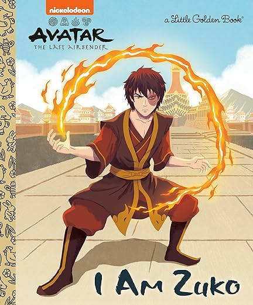
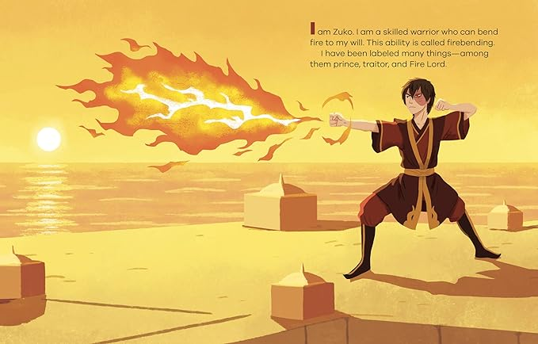
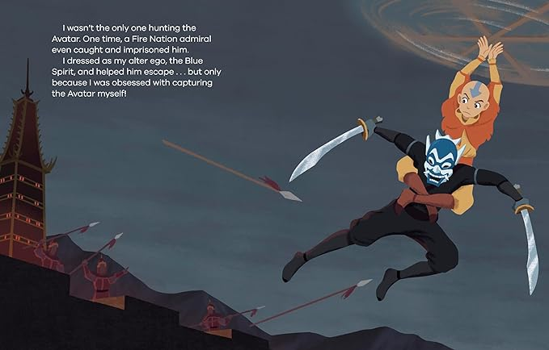
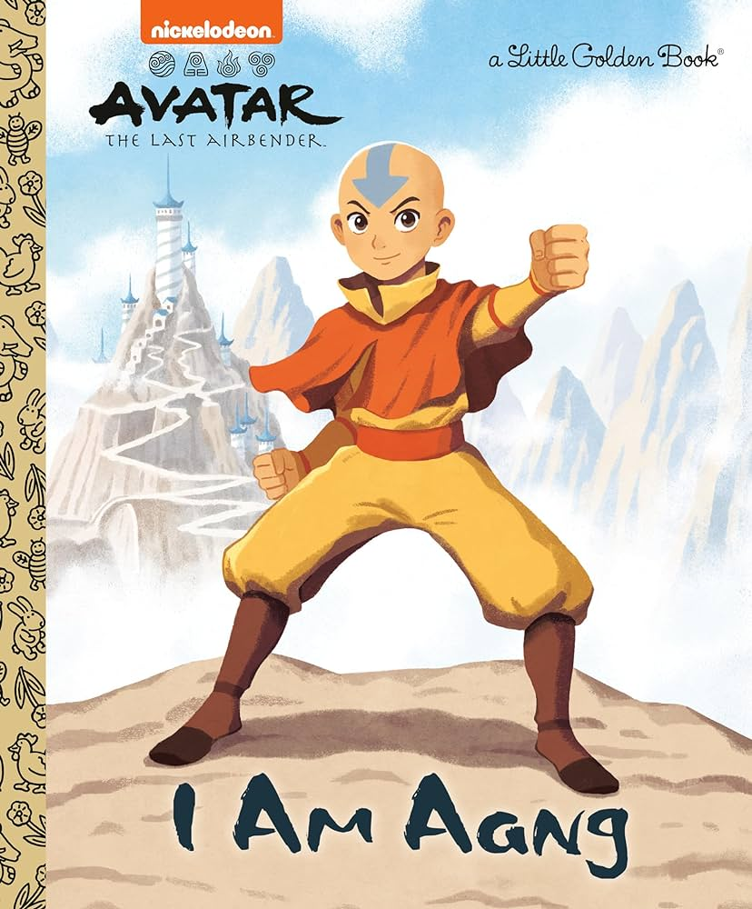

Avatar: The Last Airbender
Little Golden Books: I Am Zuko
by: Energybender100
Published: Friday, February 2nd
This exciting Little Golden Book is all about Zuko from Nickelodeon's Avatar: The Last Airbender!
Prince Zuko thinks the only way to restore his honor is to capture the Avatar and help his father conquer the four nations… but is that truly the best thing for the world, or for himself?
Based on Nickelodeon's animated series Avatar: The Last Airbender, this Little Golden Book follows Zuko's emotional journey from exiled Fire Nation Prince to firebending master.
Illustrated in the signature Little Golden Books style, it's perfect for children ages 2 to 5 and Avatar superfans of all ages!
Check out the other book in the series: I Am Aang!
